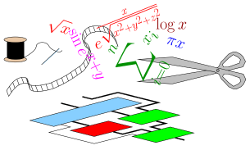

Circuits computing just right
FloPoCo is a generator of arithmetic cores (Floating-Point Cores, but not only) for FPGAs (but not only).
The first motto of FloPoCo is that arithmetic on FPGAs should not mimick processor arithmetic. By designing radically new operators, one may obtain more accurate results with less hardware in less time. This thesis was first detailed in this document.
The second motto of FloPoCo is to enable computing just right. All FloPoCo operators are
FloPoCo is not a library of operators, but a generator of operators written in C++. It inputs operator specifications, and outputs synthesizable VHDL.
While waiting for the next release (we are working on it, honest) you may want to read the 2-page paper Reflections on 10 years of FloPoCo.
FloPoCo is open-source. Contributions are welcome!
The intent of the authors is to distribute FloPoCo as free software (in the FSF AGPL sense), while imposing that the source code generated by FloPoCo is also free software (also AGPL-like). The (A)GPL doesn't seem to allow that, so it seems we have to invent something.
Current state of the license is therefore "all right reserved", which just means that the distribution terms are still being decided by the copyright owners (a consortium of the employers of the authors).
If this is a problem for your application, we are ready to negociate a commercial license: contact us.
For some slides, see a FloPoCo tutorial at HiPEAC 2013.
If you want to refer to a specific operator, please cite the publication that describes it, if it exists.
Otherwise, or if you want to refer to the framework, or the project as a whole, please cite publication below:
Florent de Dinechin and Bogdan Pasca. Designing custom arithmetic data paths with FloPoCo. IEEE Design & Test of Computers, 28(4):18--27, July 2011. [ bib | .pdf ]
A shorter and more recent overview of the project: Florent de Dinechin. Reflections on 10 years of FloPoCo. In 26th IEEE Symposium of Computer Arithmetic (ARITH-26), June 2019. [ bib | pdf ]
FloPoCo is managed by Florent de Dinechin (contact: Florent.de-Dinechin at insa-lyon.fr).
Developers: H. Abdoli, S. Banescu, L. Besème, A. Böttcher, N. Bonfante, N. Brunie, M. Christ, S. Collange, O. Desrentes, J. Detrey, F. Ferrandi, N. Fiege, L. Forget, M. Grad, K. Illyes, M. Istoan, M. Joldes, J. Kappauf, C. Klein, M. Kleinlein, K. Klug, M. Kumm, K. Kullmann, L. Ledoux, D. Mastrandrea, K. Moeller, B. Pasca, B. Popa, X. Pujol, G. Sergent, D. Thomas, R. Tudoran, A. Vasquez
Some of FloPoCo's operator code is based on FPLibrary and HOTBM code by Jérémie Detrey.
The following people have contributed to FloPoCo in some sort or some other: Greg Davey, Mariusz Grad, Daniele Mastrandrea, Pedro Echeverría Aramendi.
FloPoCo uses Sollya, ScaLP, WCPGlib, and relies heavily on GMP and MPFR.
FloPoCo is essentially developed using Free Software. Special thanks to the NVC project for providing us a perfectly useable VHDL simulator.
The following support is gratefully acknowledged